-
Substituting for p0 in pn, we get
p1 = 0.25p0 = 0.19
p2 = 0.0625p0 = 0.0476
-
The mean number of jobs in the system is
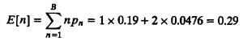
The mean number of jobs in the queue is
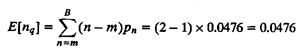
The effective arrival rate in the system is
λ’ = λ(1 – pB) = 125(1 – p2) = 125(1 – 0.0476) = 119 pps
and
Packet loss rate λ – λ’ = 125 – 119 = 6 pps
|
Box 31.3 M/M/m/B Queue (B Buffers)
- 1. Parameters:
- λ = arrival rate in jobs per unit time
- µ = service rate in jobs per unit time
- m = number of servers
- B = number of buffers, B ≥ m
- 2. Traffic intensity: ρ = λ/(mµ)
- 3. The system is always stable: ρ < ≤
- 4. Probability of zero jobs in the system:
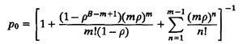
For m = 1:

- 5. Probability of n jobs in the system:
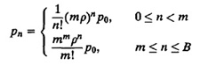
- 6. Mean number of jobs in the system: E[n] = 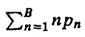
For m = 1:

- 7. Mean number of jobs in the queue:
 For m = 1: For m = 1:
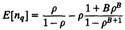
- 8. Effective arrival rate in the system: 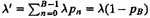
- 9. Average utilization of each server: U = λ’/mµ) = ρ(1 – pB)
- 10. Mean response time: E[r] = E[n]/λ’ = E[n]/[λ(1 – pB)]
- 11. Mean waiting time: E[w] = E[r] – 1/µ = E[nq]/[λ(1 – pB)]
- 12. The loss rate is given by λpB jobs per unit time.
- 13. For an M/M/m/m queue, the probability of a full system is given by
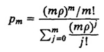
|
|
Box 31.4 M/M/1/B Queue (B Buffers)
- 1. Parameters:
- λ = arrival rate in jobs per unit time
- µ = service rate in jobs per unit time
- B = number of buffers
- 2. Traffic intensity: ρ = λ/µ
- 3. The system is always stable: ρ < ∞
- 4. Probability of zero jobs in the system:
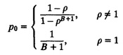
- 5. Probability of n jobs in the system:
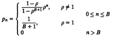
- 6. Mean number of jobs in the system:
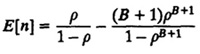
- 7. Mean number of jobs in the queue:
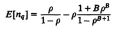
- 8. Effective arrival rate in the system: 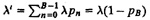
- 9. Mean response time: E[r] = E[nq]/λ' = E[n]/[λ(1-pB)]
- 10. Mean waiting time: E[w] = E[r] - 1/μ = E[nq]/[λ(1-pB)]
|
- The mean response time is
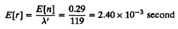
The mean time waiting in the queue is
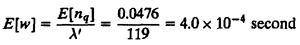
The variance and other statistics for the number of jobs in the system can also be computed since the complete probability mass function pn is known. For example,
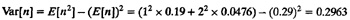
31.5 RESULTS FOR OTHER QUEUEING SYSTEMS
A majority of queueing models used in computer systems performance analysis assume exponential interarrival times and exponential service times. Therefore, the M/M/m systems discussed so far cover a majority of cases. Also, systems with general arrivals or general service times are sometimes used. These include G/M/1, M/G/1, G/G/1, and G/G/m queueing systems. The key results for these systems and those for M/D/1 systems, which are a special case of M/G/1 systems, are summarized in Boxes 31.5 to 31.10. In particular, Box 31.10 for G/G/m systems summarizes the result presented earlier in Section 30.2. Readers interested in detailed derivation of results in other boxes should refer to one of several books devoted exclusively to queueing theory.
|
Box 31.5 M/G/1 Queue
- 1. Parameters:
- λ = arrival rate in jobs per unit time
- E[s] = mean service time per job
- Cs = coefficient of variation of the service time
- 2. Traffic intensity: ρ =λE[s]
- 3. The system is stable if the traffic intensity ρ is less than 1.
- 4. Probability of zero jobs in the system: ρ0 = 1 – ρ
- 5. Mean number of jobs in the system: E[n] = ρ + ρ2(1 + Cs2)/[2(1 - ρ] This equation is known as the Pollaczek-Khinchin (P-K) mean-value formula. Note that the mean number in the queue grows linearly with the variance of the service time distribution.
- 6. Variance of number of jobs in the system:
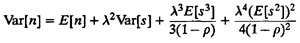
- 7. Mean number of jobs in the queue: E[n] = ρ2(1 + Cs2)/[2(1 - ρ)]
- 8. Variance of number of jobs in the queue: Var[nq] = Var[n] - ρ + ρ2
- 9. Mean response time:
E[r] = E[n]/λ = E[s] + ρE[s](1 + C2s)/[2(1 – ρ]
- 10. Variance of the response time: Var[r] = Var[s] + λE[s3]/[3(1 - ρ)] + λ2(E[s2])2/[4(1 - ρ)2]
- 11. Mean waiting time: E[w] = ρE[s](1 + C2s)/[2(1– ρ)]
- 12. Variance of the waiting time: Var[w] = Var[r] – Var[s]
- 13. Idle time distribution: F(I) = 1 – e–λI. The idle time is exponentially distributed.
- 14. Mean number of jobs served in one busy period: 1/(1 – ρ)
- 15. Variance of number of jobs served in one busy period: ρ(1 - ρ) + λ2E[s2]/(1 - ρ)3
- 16. Mean busy period duration: E[s]/(1 – ρ)
- 17. Variance of the busy period: E[s2]/(1 – ρ)3 – (E[s])2/(1 – ρ)2
For last come, first served (LCFS) or service in, random order (SIRO), the expressions for E[n] and E[r] are the same as above for FCFS. The variance expressions are different:
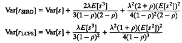
Notice that Var[rFCFS] ≤ Var[rSIRO] ≤ Var[rLCFS]
|
|
Box 31.6 M/G/1 Queue with Processor Sharing (PS)
- 1. Parameters:
- λ = arrival rate in jobs per unit time
- E[s] = mean service time per job
- 2. Traffic intensity: ρ = λE[s] < 1
- 3. Tbe system is stable if the traffic intensity ρ is less than 1.
- 4. Probability of n jobs in the system pn = (1 – ρ)ρn, n = 0, 1,..., ∞
- 5. Mean number in the system: E[n] = ρ/(1 – ρ)
- 6. Variance of the number in system: Var[n] = ρ/(1 – ρ)2
- 7. Mean response time: E[r] = E[s]/(1 – ρ)
Notice that the expressions given here are the same as those for the M/M/1 queue. The distributions are however different. Processor sharing approximates round-robin scheduling with small quantum size and negligible overhead.
|
|
Box 31.7 M/D/1 Queue
- 1. Parameters:
- λ= arrival rate in jobs per unit time
- E[s] = service time per job, s is constant
- Substituting E[sk] = (E[s])k, k = 2, 3, ..., in the results for M/G/1, we obtain the results listed here for M/D/1.
- 2. Traffic intensity: ρ = λE[s]
- 3. The system is stable if the traffic intensity is less than 1.
- 4. Probability of n jobs in system:
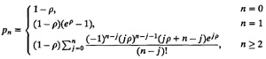
- 5. Mean number of jobs in the system: E[n] = ρ + ρ2/[2(1 – ρ)]
- 6. Variance of number of jobs in the system: Var[n] = E[n] + ρ3/[3(1 - ρ)] + ρ4/[4(1 - ρ)2]
- 7. Cumulative distribution function for response time:
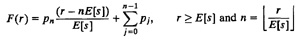
- 8. Mean response time: E[r] = E[s] + ρE[s]/[2(1 – ρ)]
- 9. Variance of response time: Var[r] = ρ(E[s])2 /[3(1 - ρ)] + ρ2(E[s])2/[4(1 - ρ)2]
- 10. Mean number of jobs in the queue: E[nq] = ρ2/[2(1 - ρ)]
- 11. Variance of number of jobs in the queue:
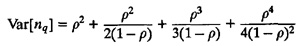
- 12. Mean waiting time: E[w] = pE[s]/[2(1 – ρ)]
- 13. Variance of waiting time: Var[w] = Var[r]
- 14. Probability of serving n jobs in one busy period:
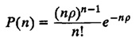
- 15. The cumulative distribution function of the busy period:
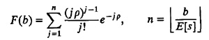
Here, [x] is the largest integer not exceeding x.
|
|
Box 31.8 M/G/∞ Queue
- 1. Parameters:
- λ= arrival rate in jobs per unit time
- E[s] = mean service time per jobs
- 2. Traffic intensity: ρ = λE[s]
- 3. The system is always stable: ρ < ∞ is less than 1.
- 4. Probability of no jobs in the system: ρ0 = e–ρ
- 5. Probability of n jobs in the system: 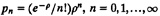
- 6. Mean number of jobs in the system: E[n] = ρ
- 7. Variance of number of jobs in the system: Var[n] = ρ
- 8. The number of jobs in the queue is always zero since there is no queueing. Thus, E[nq] = 0.
- 9. Response time is equal to the service time. Therefore, it has the same distribution as the service time.
- 10. Mean response time: E[r] = E[s]
For the special case of the M/M/∞ queue, substitute E[s] = 1/µ in these results.
|